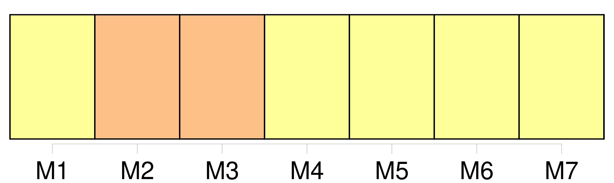

Longueur nb maillons : 9 mentions |
 |
Toute demande en divorce détaillera les faits : elle sera remise, avec [les pièces à l'appui] , s'il y [en] a, au président du tribunal ou au juge qui [en] fera les fonctions, par l'époux demandeur en personne, à moins qu'il n'en soit empêché par maladie ; auquel cas, sur sa réquisition et le certificat de deux docteurs en médecine ou en chirurgie, ou de deux officiers de santé, le magistrat se transportera au domicile du demandeur pour y recevoir sa demande. [1 phrases] Le juge, après avoir entendu le demandeur, et lui avoir fait les observations qu'il croira convenables, paraphera la demande et [les pièces] , et dressera procès-verbal de la remise du tout en ses mains. [4 phrases]
Au jour indiqué, le juge fera aux deux époux, s'ils se présentent, ou au demandeur, s'il est seul comparant, les représentations qu'il croira propres à opérer un rapprochement : s'il ne peut y parvenir, il en dressera procès-verbal, et ordonnera la communication de la demande et [des pièces] au commissaire du Gouvernement, et le référé du tout au tribunal. [4 phrases]
Le demandeur, en vertu de la permission du tribunal, fera citer le défendeur, dans la forme ordinaire, comparaître en personne à l'audience à huis clos dans le délai de la loi ; il fera donner copie, en tête de la citation, de la demande en divorce et [des pièces produites à l'appui] [1 phrases]
À l'échéance du délai, soit que le défendeur comparaisse ou non, le demandeur en personne, assisté d'un conseil s'il le juge à propos, exposera ou fera exposer les motifs de sa demande ; il représentera [les pièces] [qui] l'appuient, et nommera les témoins qu'il se propose de faire entendre. [1 phrases] Si le défendeur comparaît en personne ou par un fondé de pouvoir, il pourra proposer ou faire proposer ses observations, tant sur les motifs de la demande que sur [les pièces produites par le demandeur] et sur les témoins par lui nommés. |
|
Il est possible de télécharger la ressource sur la page Ortolang |
Si vous avez des questions ou vous voyez des erreurs, merci d'envoyer un mail à silvia.federzoni89@gmail.com |